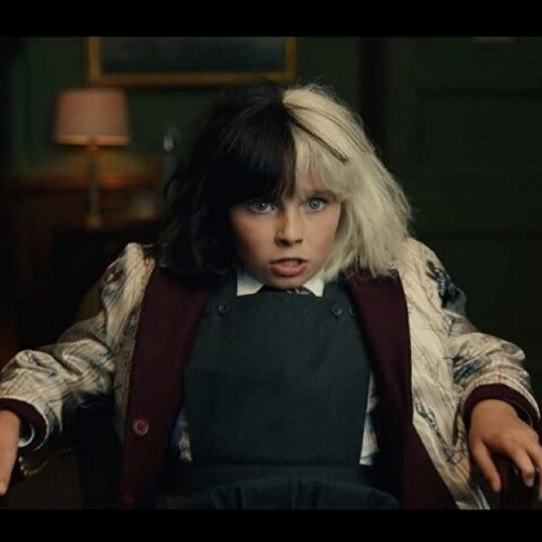
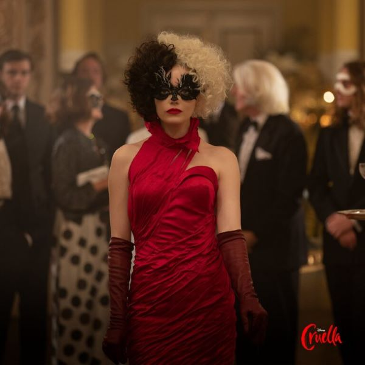

イントロダクション

ストーリー
キャスト

クルエラはディズニーの世界でとても有名な、白黒ツートンカラーの髪の女。ディズニーの名作アニメ『101匹わんちゃん』（1961年）に毛皮好きの悪女デザイナーとして登場するクルエラ・デ・ビルのことで、“ディズニー史上最も悪名高きヴィラン”（ヴィラン＝悪役のこと）と位置付けられています。
最新作『クルエラ』は、彼女がどんな生い立ちだったのか、なぜヴィランへと変貌したのか、クルエラ誕生エピソードを明らかにし、彼女のその後の過激な生き方を描きます。